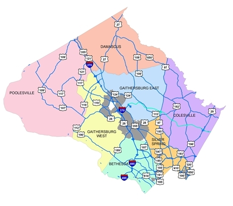

Exposing the Secrets Behind Car Crashes in Montgomery County – You’ll Be Shocked!
 In Montgomery County, Maryland, efforts to enhance traffic safety are supported by a rich array of public data. These datasets, ranging from road conditions to detailed crash reports, offer valuable insights into the factors influencing accidents. While deteriorating roads are often perceived as the primary hazard, the data reveals a more complex reality. Analysis shows that although poor road conditions do contribute to accidents, other factors—such as weather and driver behavior—play equally significant roles, underscoring the multifaceted nature of improving road safety.
To find out, we dug into the data to see how road quality, weather, and surface conditions shape the likelihood of accidents. What we found might surprise you. While pavement conditions do play a role, they’re far from the whole story.
Does Pavement Quality Correlate with Accidents?
Using the Pavement Condition Index (PCI) dataset maintained by the Montgomery County Department of Transportation, researchers evaluated whether road quality directly influences traffic collisions. The PCI rates road conditions on a scale from 1 to 100, with lower scores indicating poorer quality.
A comparison of crash data from the county’s Automated Crash Reporting System (ACRS) revealed only a weak correlation between low PCI scores and higher accident rates. Contrary to popular belief, even roads in poor condition (PCI scores of 0–30) were not consistently associated with significantly higher crash frequencies.This finding indicates that while poor roads may contribute to accidents, they are not the primary factor.

Other Key Factors in Accidents
The detailed crash reports highlight other significant contributors to traffic incidents:
Driver Behavior: Distraction and substance use were common factors in many collisions, underscoring the importance of driver accountability.
Light Conditions: Reduced visibility during dusk and nighttime hours also correlated with higher accident rates, emphasizing the need for better lighting infrastructure.
As Montgomery County harnesses the power of open data, it becomes increasingly clear how vital it is to challenge common misconceptions about traffic safety. For instance, while poor road conditions often take the blame for accidents, the data reveals that factors like human behavior and weather are just as critical. By analyzing and understanding these trends, the community can adopt more effective strategies for prevention.
Get Behind the Wheel, Explore the Data Yourself
Curious about what really drives traffic accidents in Montgomery County? Now you can explore the data for yourself with our user-friendly interactive dashboard!
Dive into the numbers and uncover fascinating patterns. Want to see how weather conditions influence crashes? Toggle between rain, dry roads, and other scenarios to track trends and reveal the surprising factors at play.
The dashboard features two key visualizations:
Bar Graphs: One breaks down crash trends by road surface conditions, showing that most accidents occur on dry roads. The other focuses on injury severity, where the majority of collisions result in no apparent injuries. Histogram: Adjust the bins to analyze speed limits at crash sites. You’ll notice a bell-shaped curve, with most accidents clustering around an average speed limit of 29 mph. With 50 rows of detailed data to explore, this tool offers an engaging way to understand the nuances of traffic safety. From injury outcomes to environmental conditions, the dashboard brings the story of our roads to life.
Ready to dig in? Discover the trends shaping our community’s roadways and see for yourself what factors matter most.
#| '!! shinylive warning !!': |
#| shinylive does not work in self-contained HTML documents.
#| Please set `embed-resources: false` in your metadata.
#| echo: false
#| standalone: true
#| viewerHeight: 640
#| embed-resources: false
#|
suppressPackageStartupMessages(library(shiny))
suppressPackageStartupMessages(library(tidyverse))
options("readr.edition" = 1)
# Define UI for app ----
ui <- fluidPage(
# App title ----
titlePanel("Interactive Crash Data Exploration"),
# Sidebar layout with input and output definitions ----
sidebarLayout(
# Sidebar panel for inputs
sidebarPanel(
# Input: Select column to visualize
selectInput(inputId = "selected_column",
label = "Select a Column to Visualize:",
choices = c("Speed.Limit", "Injury.Severity", "Surface.Condition"),
selected = "Speed.Limit"),
# Input: Slider for the number of bins
sliderInput(inputId = "bins",
label = "Number of bins:",
min = 1,
max = 50,
value = 20)
),
# Main panel for displaying outputs
mainPanel(
# Output: Histogram
plotOutput(outputId = "histPlot"),
# Display Insights
verbatimTextOutput(outputId = "summary")
)
)
)
# Define server logic ----
server <- function(input, output) {
# Load data from the provided URL
data <- read_rds("https://sussmanbu.github.io/ma-4615-fa24-final-project-group-1/scripts/subset_data.rds")
# Updated histogram/bar plot logic
output$histPlot <- renderPlot({
if (is.numeric(data[[input$selected_column]])) {
# Numeric columns: Use histogram
ggplot(data, aes(x = !!sym(input$selected_column))) +
geom_histogram(bins = input$bins, fill = "steelblue", color = "black") +
labs(x = input$selected_column, y = "Count",
title = paste("Histogram of", input$selected_column)) +
theme_minimal()
} else {
# Categorical columns: Use bar chart
ggplot(data, aes(x = !!sym(input$selected_column))) +
geom_bar(fill = "steelblue", color = "black") +
labs(x = input$selected_column, y = "Count",
title = paste("Bar Chart of", input$selected_column)) +
theme_minimal()
}
})
# Generate insights based on selected column
output$summary <- renderPrint({
selected_data <- data[[input$selected_column]]
if (input$selected_column == "Speed.Limit") {
avg_speed <- mean(selected_data, na.rm = TRUE)
cat("Average Speed Limit (when crash occurred):", round(avg_speed, 2), "mph")
} else if (input$selected_column == "Injury.Severity") {
cat("Injury Severity Counts:\n")
print(table(selected_data, useNA = "ifany"))
} else if (input$selected_column == "Surface.Condition") {
cat("Surface Condition Distribution:\n")
print(table(selected_data, useNA = "ifany"))
}
})
}
# Create Shiny app ----
shinyApp(ui, server)